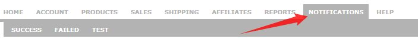
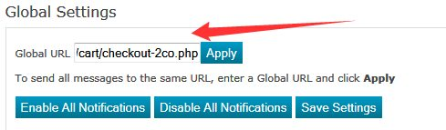
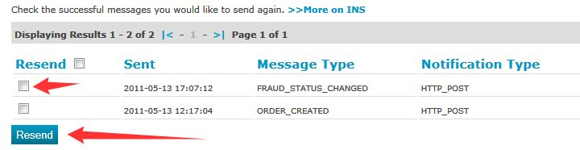

What is 2Checkout?
2Checkout helps merchants start selling online in just a few minutes and without any hassle! It provides you an integrated payment solution to help you handle your customer payments from start to finish.
INS: Instant Notification System
The Instant Notification Service (INS) is designed to offer vendors a way to automate order management processes by accepting order information via web posts. Maian Cart supports INS.
Enable 2Checkout INS
1. Sign up for an account at 2Checkout if you don`t already have one.
2. Log into your 2Checkout account and select 'Notifications' from the top menu:

3. In the 'Global' box, enter your store url to the 'checkout-2co.php' file in your cart root. Example:
http://www.yoursite.com/cart/checkout-2co.php (Replacing the domain/path with your own correct path)

NOTE. 2Checkout`s notification can only be sent to the domain specified in your profile. Your cart MUST be on this same domain.
4. Click 'Apply' to add the url to ALL boxes on the page. Make sure ALL options are enables, then click 'Save Settings'.
2Checkout is now ready to go.
Enable 2Checkout as Payment Option in Maian Cart
Select 'Catalogue > Payment Methods'. Click the  icon and launch the 2Checkout configuration window. Complete the options shown
to activate 2Checkout. More info as follows:
icon and launch the 2Checkout configuration window. Complete the options shown
to activate 2Checkout. More info as follows:
Account Number
This is your 2checkout account number.
Secret Word
This is your 2checkout secret word as set in your 2checkout account area.
Information About this Payment Method
This is presented to visitors if they click for more info on the gateway on the checkout page. Optional. Use BB Code for formatting, HTML is not allowed.
Alternative Redirect Url (Optional)
Alternative redirect url is the page a visitor will be directed to after a successful transaction. You should NOT use this option if you sell downloadable items as visitors will not be able to download their products immediately after purchase.
Enter full url starting http://
Live/Test Payment URL
2Checkout`s processing url. At the time of these docs it is:
https://www.2checkout.com/checkout/purchase
This should not be changed unless altered by 2Checkout.
Enable 2Checkout
Enable / disable 2Checkout as payment option.
2Checkout Test Mode & Restrictions
To activate in Maian Cart, set the payment mode to 'Test' on the 'System > General Settings > Global Payment Settings' page. If it Test mode 2Checkout does not debit any credit cards. However, it also does NOT send any INS post data back to the website, so its very difficult to test 2Checkout successfully in test mode. A live payment will probably be your best way of testing. An option to utilise the 2Checkout INS simulator may be built in at a later date.
Passing Additional Payment Parameters
Maian Cart allows you to specify additional payment parameters besides the required system ones. This maybe useful if you need to pass a certain parameter to any gateway during
purchase. Some gateways have many parameters that enable/disable functions on the checkout page. To add addtional parameters for 2Checkout, enter array key => value pairs in the following file:
classes/gateways/inclusions/2checkout.php
Performing Additional Actions After Successful Payment
Maian Cart allows you to perform additional actions after a successful transaction. This is useful if you need to execute additional code after the payment has been accepted. Edit the following file:
classes/gateways/triggers/2checkout.php
This is for advanced users.
Re-Transmitting INS Messages
2Checkout enables you to re-transmit the INS post to your website. This is useful if you website server suddenly goes down at the point of transmission and the sales data wasn`t updated
in the system. To re-send INS post transmissions, log into your 2Checkout account and select 'Notifications > Failed' from the top menu. You can also select 'Success' if 2Checkout sent the INS ok
but the website didn`t log anything.

Once your results appear, click the checkboxes and then 'Resend'.
NOTE: The ORDER_CREATED status is the initial transmission, so this should be sent first, followed by 'FRAUD_STATUS_CHANGED'.
Help Tips
The same or additional information may be provided by hovering your cursor over the  image next to each heading in the admin area if applicable.
image next to each heading in the admin area if applicable.